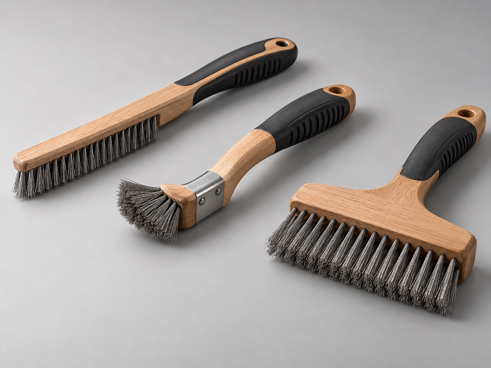

Straight and narrow heads
Consider a compact head for defined access along a joint, edge or channel. Describe the working space and brushing direction so head width, wire reach and handle clearance can be reviewed together.
Home / Product families / Hand wire scratch brushes
MANUAL INDUSTRIAL WIRE BRUSHES
Manual brushing remains useful for targeted weld preparation, rust and loose-scale removal, edge touch-up and maintenance tasks where a power brush is not the preferred access or control method. Choose head shape and wire against the workpiece, joint and surface to protect.
Discuss a hand-brush applicationNeed powered brushing for a larger contact area? See industrial wheel brushes →

Consider a compact head for defined access along a joint, edge or channel. Describe the working space and brushing direction so head width, wire reach and handle clearance can be reviewed together.
A wider working face can cover a broader manual cleaning area. The job, surface condition and effort expected should guide wire form and head arrangement rather than assuming one brush suits every surface.
Carbon steel and stainless wire are common industrial brush-filament directions; confirm compatibility and contamination-control needs for the workpiece. Handle shape, reach and grip can be reviewed against the task.
APPLICATION-LED SELECTION
A photo of the joint or existing brush can make a manual-brush review more useful. State what must be removed and what must not be scratched or contaminated.
| Workpiece | Base metal, coating, surface finish and any contamination-control requirements |
|---|---|
| Task | Weld preparation, rust or scale removal, edge clean-up or general maintenance |
| Access | Joint position, channel or corner clearance, reach and brushing direction |
| Brush format | Straight, narrow or wide head; handle style and working length |
| Wire | Carbon or stainless option for technical review; confirm against the workpiece |
| Order brief | Quantity, destination and drawing or application photo where available |
COMMON QUESTIONS
It can suit manual weld preparation, localized touch-up and maintenance when a powered brush is impractical. Match the brush to the task and workpiece, and follow safe handling requirements for the selected tool.
Stainless wire can be reviewed where the application requires it. Share the base metal and contamination-control needs so the proposed brush is checked against the intended use.
Head profile, wire arrangement, handle and reach can be reviewed against a drawing, sample or clear application description. Final availability and specification are confirmed during the quotation review.
Ferrabrio can review a hand wire brush direction against your workpiece and cleaning task, then confirm the proposed configuration before quotation.